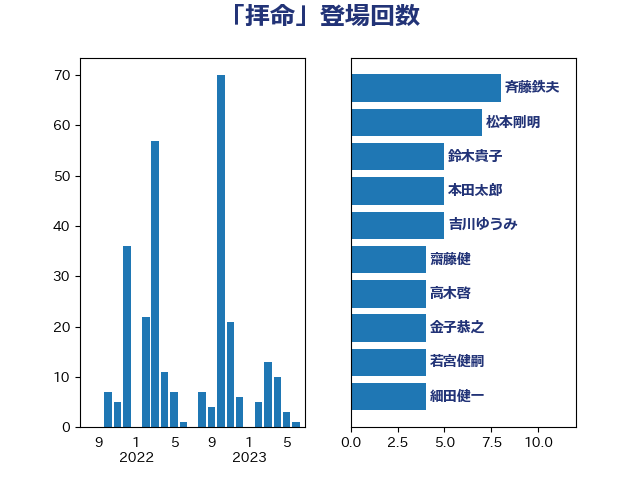

単語「拝命」

| 斉藤鉄夫 | 公明党 | 8 回 |
| 松本剛明 | 自由民主党 | 7 回 |
| 鈴木貴子 | 自由民主党 | 5 回 |
| 本田太郎 | 自由民主党 | 5 回 |
| 吉川ゆうみ | 自由民主党 | 5 回 |
| 齋藤健 | 自由民主党 | 4 回 |
| 高木啓 | 自由民主党 | 4 回 |
| 金子恭之 | 自由民主党 | 4 回 |
| 若宮健嗣 | 自由民主党 | 4 回 |
| 細田健一 | 自由民主党 | 4 回 |
| 比嘉奈津美 | 自由民主党 | 4 回 |
| 武井俊輔 | 自由民主党 | 4 回 |
| 岩田和親 | 自由民主党 | 4 回 |
| 山田賢司 | 自由民主党 | 4 回 |
| 小田原潔 | 自由民主党 | 4 回 |
| 上杉謙太郎 | 自由民主党 | 4 回 |
| 鬼木誠 | 立憲民主党 | 3 回 |
| 野中厚 | 自由民主党 | 3 回 |
| 西銘恒三郎 | 自由民主党 | 3 回 |
| 西村康稔 | 自由民主党 | 3 回 |
| 秋葉賢也 | 自由民主党 | 3 回 |
| 秋本真利 | 無所属 | 3 回 |
| 渡辺博道 | 自由民主党 | 3 回 |
| 島村大 | 自由民主党 | 3 回 |
| 小林鷹之 | 自由民主党 | 3 回 |
| 堀内詔子 | 自由民主党 | 3 回 |
| 伊佐進一 | 公明党 | 3 回 |
| 三宅伸吾 | 自由民主党 | 3 回 |
| 黄川田仁志 | 自由民主党 | 2 回 |
| 鳩山二郎 | 自由民主党 | 2 回 |
| 高村正大 | 自由民主党 | 2 回 |
| 長谷川淳二 | 自由民主党 | 2 回 |
| 長峯誠 | 自由民主党 | 2 回 |
| 鈴木英敬 | 自由民主党 | 2 回 |
| 金子俊平 | 自由民主党 | 2 回 |
| 野村哲郎 | 自由民主党 | 2 回 |
| 里見隆治 | 公明党 | 2 回 |
| 角田秀穂 | 公明党 | 2 回 |
| 藤木眞也 | 自由民主党 | 2 回 |
| 藤原崇 | 自由民主党 | 2 回 |
| 藤丸敏 | 自由民主党 | 2 回 |
| 萩生田光一 | 自由民主党 | 2 回 |
| 自見はなこ | 自由民主党 | 2 回 |
| 羽生田俊 | 自由民主党 | 2 回 |
| 秋野公造 | 公明党 | 2 回 |
| 石井正弘 | 自由民主党 | 2 回 |
| 畦元将吾 | 自由民主党 | 2 回 |
| 田畑裕明 | 自由民主党 | 2 回 |
| 渡辺孝一 | 自由民主党 | 2 回 |
| 深澤陽一 | 自由民主党 | 2 回 |
| 武部新 | 自由民主党 | 2 回 |
| 柘植芳文 | 自由民主党 | 2 回 |
| 杉田水脈 | 自由民主党 | 2 回 |
| 本田顕子 | 自由民主党 | 2 回 |
| 木村次郎 | 自由民主党 | 2 回 |
| 岸田文雄 | 自由民主党 | 2 回 |
| 岩本剛人 | 自由民主党 | 2 回 |
| 岡本三成 | 公明党 | 2 回 |
| 尾身朝子 | 自由民主党 | 2 回 |
| 小野田紀美 | 自由民主党 | 2 回 |
| 寺田稔 | 自由民主党 | 2 回 |
| 宮本周司 | 自由民主党 | 2 回 |
| 宮崎雅夫 | 自由民主党 | 2 回 |
| 宗清皇一 | 自由民主党 | 2 回 |
| 太田房江 | 自由民主党 | 2 回 |
| 大家敏志 | 自由民主党 | 2 回 |
| 堀場幸子 | 日本維新の会 | 2 回 |
| 国光あやの | 自由民主党 | 2 回 |
| 勝俣孝明 | 自由民主党 | 2 回 |
| 加藤勝信 | 自由民主党 | 2 回 |
| 佐藤英道 | 公明党 | 2 回 |
| 井野俊郎 | 自由民主党 | 2 回 |
| 井林辰憲 | 自由民主党 | 2 回 |
| 井上貴博 | 自由民主党 | 2 回 |
| 中谷真一 | 自由民主党 | 2 回 |
| 中西祐介 | 自由民主党 | 2 回 |
| 中村裕之 | 自由民主党 | 2 回 |
| 中曽根康隆 | 自由民主党 | 2 回 |
| 中川貴元 | 自由民主党 | 2 回 |
| 下野六太 | 公明党 | 2 回 |
| 三浦靖 | 自由民主党 | 2 回 |
| 青島健太 | 日本維新の会 | 1 回 |
| 階猛 | 立憲民主党 | 1 回 |
| 長谷川英晴 | 自由民主党 | 1 回 |
| 金田勝年 | 自由民主党 | 1 回 |
| 野田国義 | 立憲民主党 | 1 回 |
| 野上浩太郎 | 自由民主党 | 1 回 |
| 重徳和彦 | 立憲民主党 | 1 回 |
| 足立康史 | 日本維新の会 | 1 回 |
| 赤羽一嘉 | 公明党 | 1 回 |
| 西田昭二 | 自由民主党 | 1 回 |
| 西村明宏 | 自由民主党 | 1 回 |
| 菊田真紀子 | 立憲民主党 | 1 回 |
| 笠浩史 | 無所属 | 1 回 |
| 竹内譲 | 公明党 | 1 回 |
| 牧山ひろえ | 立憲民主党 | 1 回 |
| 片山さつき | 自由民主党 | 1 回 |
| 泉田裕彦 | 自由民主党 | 1 回 |
| 河野太郎 | 自由民主党 | 1 回 |
| 森山裕 | 自由民主党 | 1 回 |
| 柴山昌彦 | 自由民主党 | 1 回 |
| 林芳正 | 自由民主党 | 1 回 |
| 末松信介 | 自由民主党 | 1 回 |
| 新藤義孝 | 自由民主党 | 1 回 |
| 斎藤嘉隆 | 立憲民主党 | 1 回 |
| 後藤茂之 | 自由民主党 | 1 回 |
| 岩屋毅 | 自由民主党 | 1 回 |
| 岡田直樹 | 自由民主党 | 1 回 |
| 山口晋 | 自由民主党 | 1 回 |
| 小西洋之 | 立憲民主党 | 1 回 |
| 室井邦彦 | 日本維新の会 | 1 回 |
| 奥野総一郎 | 立憲民主党 | 1 回 |
| 大西英男 | 自由民主党 | 1 回 |
| 大塚拓 | 自由民主党 | 1 回 |
| 佐々木紀 | 自由民主党 | 1 回 |
| 今井絵理子 | 自由民主党 | 1 回 |
| 井上英孝 | 日本維新の会 | 1 回 |
| 中野英幸 | 自由民主党 | 1 回 |
| 上野賢一郎 | 自由民主党 | 1 回 |